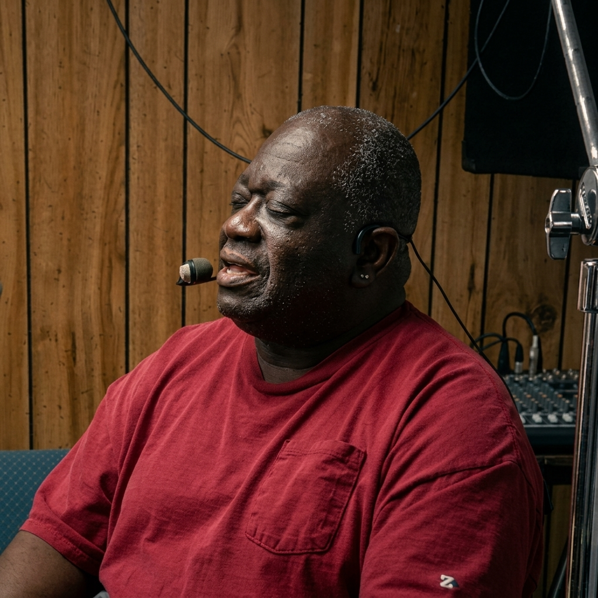

LEADERSHIP
The leaders and specialists powering Internet Media Providers — a unified team across radio, television, and digital media.
Click any team member to view their full profile.
Co-Founder, President & CTO
Over 30 years of IT experience and digital media broadcasting. Started his first internet radio station in 2004 as his college graduation project. Founded Internet Media Providers to transform how communities engage with digital media.
View Profile →
Co-Founder & Studio Owner — CTK Studios
IMP's Co-Founder and owner of CTK Studios in Federal Heights, CO. Connected to Christ the King Radio and Rocky Mountain Jazz Worldwide, bringing independent broadcasting to the Denver area.
View Profile →VP of Business Affairs & Studio Owner — IMP-STL
25 years spanning business relations in real estate and non-profit sectors. Founder of The Covering, a faith-based nonprofit. Host of the nationally syndicated 'Men's 911' broadcast and studio owner of IMP-STL in Ferguson, MO.
View Profile →VP of Customer Relations
25+ years in client building and international customer relations. Founder and CEO of Project Purpose, collaborating with churches, schools, and community organizations to build ownership through education and economic empowerment.
View Profile →VP of Media Creation
CeCe Shatz is a dynamic force in radio and television, serving as the Doyenne of Divorce, Dating & Mentor in Radio & TV. She brings decades of on-air experience and a passion for empowering communities through media.
View Profile →Click any specialist to view their full profile.
Director of Audio Engineering & Theatrical Consultant
Director of Sales
International Spokesperson & Cultural Director
Video Content Coordinator & Sample Director
Chief Coordinator — Chief of Staff
Content Creation Specialist
Marketing & Acquisition Specialist
Operations & Creator Success
Finance & Admin
Audience Development & Retention
Compliance & Content Moderation
Strategy & Partnerships